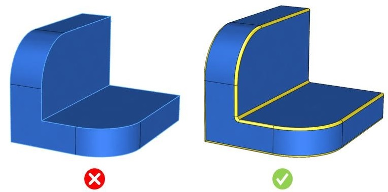

本ルールは、パーツに鋭い外周エッジが存在するかどうかをチェックします。
積層造形（Additive Manufacturing）では、鋭い外周エッジを持つ形状を実現することは困難です。
レーザーパウダースプレー（LPS）では鋭い外側コーナーを形成することは不可能です。LPSの場合、外周の最小半径は0.1インチ以上が必要です。
レーザーパワーベッド（LPB）の場合は最小半径0.002インチが必要になります。
最小半径の値は、使用する装置や材料によって変化します。鋭いコーナーを維持するためには、より高精度な装置が必要となり、その結果、製造コストが増加します。
一般的な設計ガイドラインでは、製造コストの増加につながるため、鋭い外周エッジを避けることが推奨されています。
